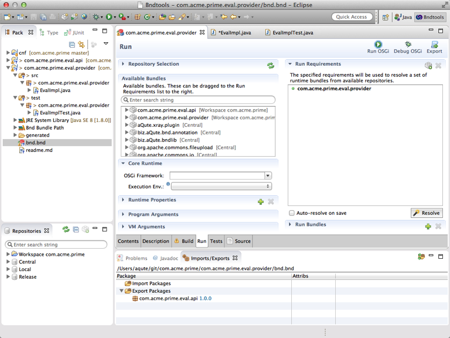
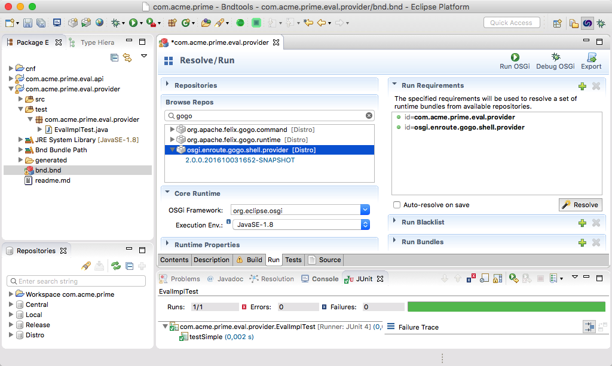
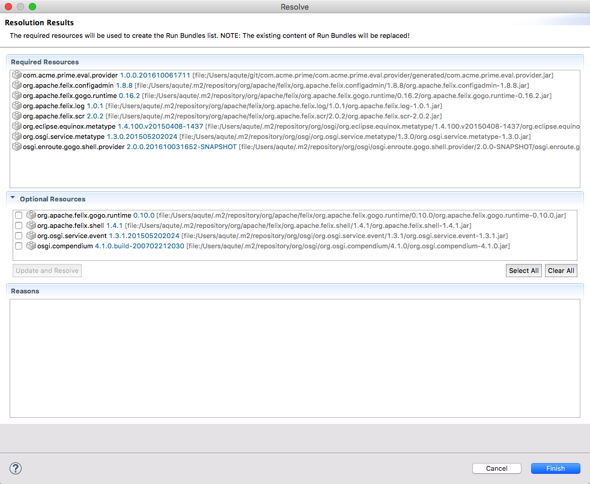
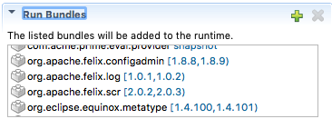
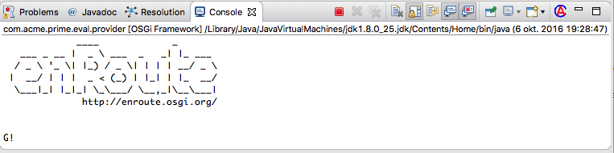

Running your Code
What You Will Learn in This Section
In this section we will take the project we created in the previous section and make it run inside an actual framework. This requires to select the initial requirements of a runtime and then let bndtools resolve this into a set of run bundles. We then run the framework.
What to Run?
We could of course run our current project but that raises the existential question: what are we actually running? Looking at the provider code we’ve created we cannot but notice that it is a rather lazy bum (lazy is good!); the Eval Provider implementation of the Eval service waits until it gets called. So to make it do anything noticeable, we will need to add some behavior.
The way we usually do this in OSGi is by creating a command in the Apache Felix Gogo Shell. This sounds much more complicated than it is since Gogo can call any method on any service if given permission. You grant this permission by adding some special service properties. Just change the @Component annotation on our EvalImpl class to:
@Component(
name = "com.acme.prime.eval",
property = {
Debug.COMMAND_SCOPE + "=test",
Debug.COMMAND_FUNCTION + "=eval"
}
)
These properties register the test:eval command with Gogo. The scope (the test part) is always required to disambiguate commands. (In this case it is actually really required since Gogo already has an eval command, ok, bad planning).
Note that if you copy paste the “property” definition above in your code, eclipse will complain that it cannot find the “Debug” class. Just go to next to it and press Ctrl+Space to import the necessary class automatically.
Runtime Environment
The Runtime Environment defines what the OSGi Framework should be running, how that framework should be configured, what support bundles should be loaded, and some other parameters. The ‘Run’ tab of the bnd.bnd editor is designed to set this information, so double click on bnd.bnd and select the Run tab.

The ‘Run’ tab consists of a number of UI parts that we will discuss in the following sections.
Core Runtime
The Core Runtime section allows us to select a framework and an execution environment. You should set those to the org.eclipse.osgi (Eclipse Equinox) framework and choose the JavaSE-1.8 execution environment. An execution environment is basically a version of Java-SE.
Run Requirements
One of the most annoying aspects of software is always making sure you have your dependencies in place. Especially in an OSGi enRoute environment where we go out of our way to not depend on implementations (we compile only against service API) it could be a bit of work to find a matching set of bundles for our runtime. That is, if there was no ‘Resolve’ button.
Since there is a ‘Resolve’ button, we can get away with only specifying our requirements and leave the blue collar assembly work to bndtools. Let’s see how this works.
The Run tab contains a a Run Requirements section. This section contains a list with the initial requirements. You can drag any bundle on the left from the Available Bundles list into the requirements list. We only really want to run our own bundle, so the initial content is ok: com.acme.prime.eval.provider. This is a requirement to our current bundle, which is already set by default (clever!).
We did not create an implied requirement in our code on the Gogo shell since we only used properties.
If Gogo is present, we provide a command, otherwise we do not bother. However, we want to run
Gogo in our runtime so we can play with our code. So to make our runtime more fun we need to add the
initial requirement org.apache.felix.gogo.shell, this will make sure we have the shell present.

Since this bundle uses Declarative Services (DS), it needs at least a DS implementation, and of course whatever that DS implementation needs, ad nauseum. When you hit the Resolve button, the bnd resolver will try to create a closure of a set of bundles so that all requirements are satisfied. So hit it!
Some common problems:
- The resolver will give an error that the API bundle is unresolvable with a
missing requirement false. This rather cryptic message is usually caused by an API project where there is no provider that exports the package. You can do one of the following: 1- (Recommended) export the “com.acme.prime.eval.api” in your provider bundle. 2-Removing theRequire-Capability: compile-onlyfrom “com.acme.prime.eval.api”bnd.bndfile source tab.
It will pop up a window that shows the set of bundles that it found. If not, at least it should show you the diagnostics of what is missing. So if things go well, and why shouldn’t they, you shoud see the following dialog:

If you accept the result, the list becomes the run bundles specification for this bnd.bnd file. You can inspect this list by clicking on the Run Bundles section, right down on the bnd.bnd Run tab.

What we have done so far is all in memory, you will need to save the bnd.bnd file to make this effective.
Launching
At the right-top of the Run tab you see a Run OSGi and Debug OSGi button. Hit one of them and enjoy the warm welcome from your first amazing enRoute application. You can be proud of yourself! That is, if you can’t find it, it is at the bottom part of the window, the output of the Eclipse console.

Of course we’re highly interested in the answer to ultimate question of how much 21+21 is:
g! test:eval 21+21
42.0
Sometimes, you know, life is just good …
Updating
Adding, subtracting, gets a bit boring after a while. Didn’t the Bible tell us to multiply? So why not be nice and add multiplication and division. Open the provider project and change the implementation of eval as follows:
Pattern EXPR = Pattern
.compile("\\s*(?<left>\\d+)\\s*(?<op>\\+|-|\\*|/)\\s*(?<right>\\d+)\\s*");
....
switch (m.group("op")) {
case "+":
return left + right;
case "-":
return left - right;
case "*":
return left * right;
case "/":
return left / right;
}
Just add the new code and save the EvalImpl class, then go to the Gogo shell. Hmm, you did not really have to stop the framework, in the OSGi world we are dynamic. So if you out of bad habit killed the running process, you should first restart the framework. Click on the bnd.bnd file, select the Run tab and click the Debug OSGi button. If you don’t understand what I am talking about, well, your framework should still be humming along, having just been updated. So assuming we’re all in the Gogo shell now:
g! test:eval 6*7
42.0
What happened? When we changed the source code, the IDE compiled the class, which triggered bnd to build the bundle. A changed bundle is detected by the launcher and automatically deployed to the running framework. This obviously required our bundle to be updated. In practice, you rarely have to restart the framework, everything you change in the IDE, including changes in the bnd.bnd file are quickly deployed to the running framework.
How Does it Work?
When you launch an application a launcher is started in a remote process. This launcher gets a properties that describes what framework to use, what bundles to load etc. This properties file is created by bndtools. After the launcher has initialized everything, it starts the bundles and then starts watching the properties file. If this file changes, it reloads it and calculates a delta and then applies this delta to the running framework. This works for most of the information but not everything.
In the bndtools process we are listening to changes to any of the information that was used to created the properties file. If such a change is detected, the launch property file is recreated, thereby triggering the launcher.
To develop in such a dynamic environment is actually good practice even if you run the system quite statically. The dynamism during development will point out a lot of potential issues and make your code much more robust. It is a bit like fighter pilots. They get trained at a 10% higher speed than reality, when they hit the dog fight they can feel quite zen because it is so much slower than what they’re used to!